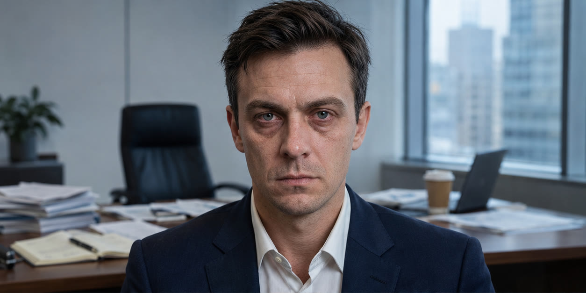
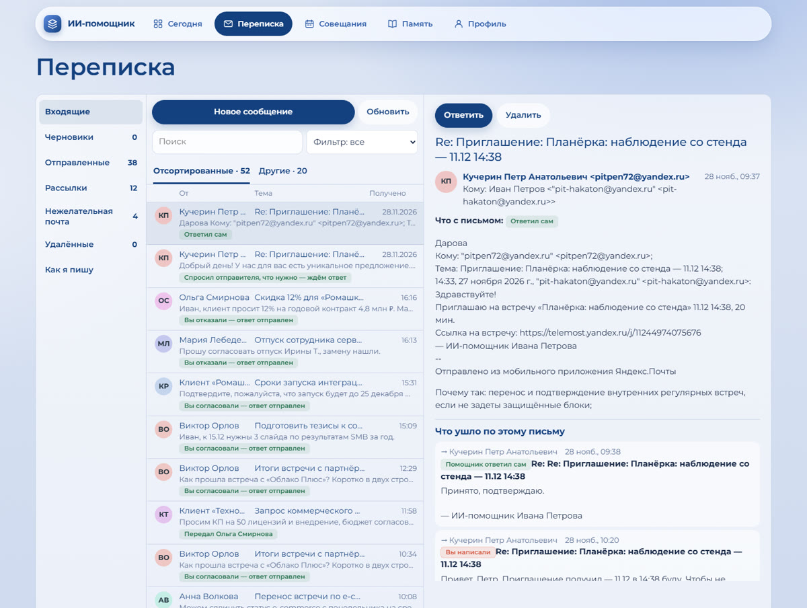
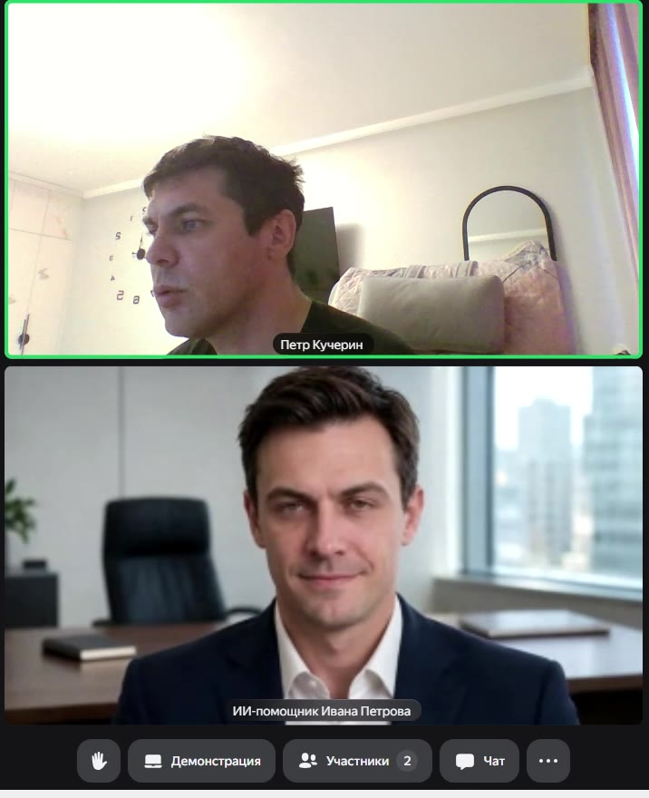
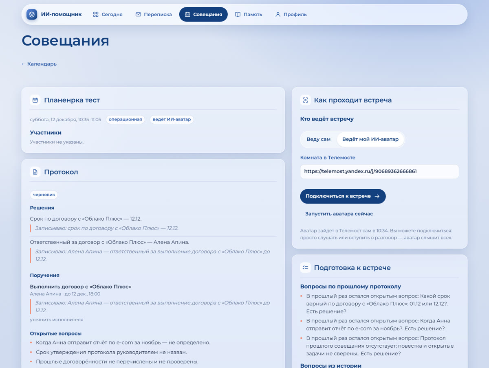
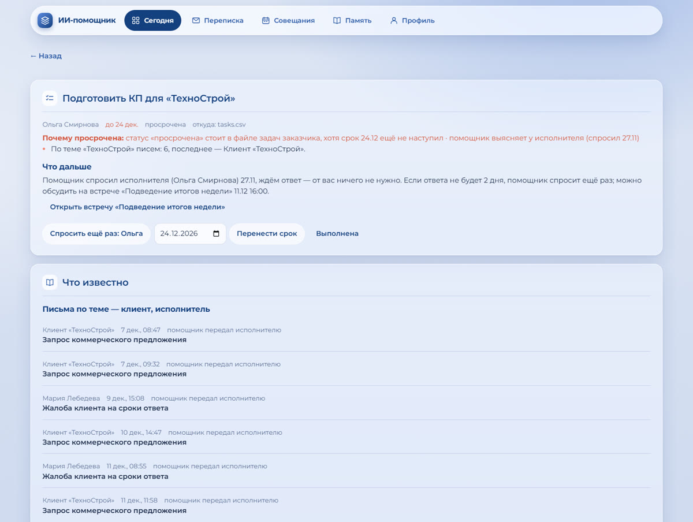

Как сейчас · руководитель направления SMB и Digital
писем в день и 25–40 встреч в неделю. Решения теряются в почте, задачи после встреч — в головах.
Цель заказчика — вернуть руководителю 8–12 часов в неделю.
Почта · как в Outlook

80 / 80 писем заказчика разобраны верно, ни одного нарушения запретов.
«Ждут только вас»
писем к руководителю склеиваются в 8 вопросов. В карточке — запрос одной строкой, что мешает, совет и два готовых ответа: «согласовать» и «отказать».
Каждый факт — дословно из источника. Число без источника помощник подсвечивает: «проверьте».
Встреча · Яндекс Телемост

настоящая встречаПосле встречи

Задачи и сроки

Не под одного руководителя
Модель меняется в настройках — в том числе на российскую или локальную в закрытом контуре.
Сколько стоит
DeepSeek Flash на письмо. Голос — Whisper на нашем сервере, 0 ₽. Аватар — подписка LiveAvatar, ≈ 15 ₽ за минуту встречи.
Итог · стенд работает сейчас